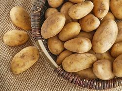

te damos la bienvenida a la web con las mejores recetas de patatas
recetas:

Un poco de historia sobre las patatas:
a historia de la patata tiene un punto curioso pues, a este tubérculo que trajeron a Europa los exploradores de las Américas a finales del siglo XVI, nadie hizo el menor caso durante años. Inicialmente solo se utilizó como alimento para animales y tuvieron que pasar dos siglos antes de que la patata se popularizara como alimento entre los humanos.
Gracias al francés antoine Augustin de Parmentier el consumo de la patata se normalizó a finales del siglo XVIII. Hoy en día la patata se ha convertido en un imprescindible. Ingrediente versátil, sabroso y, sobre todo, económico con el que podemos preparque nos permite ahorrar en la lista de lar, entre otras, estas 101 recetas con patata y ahorrar en la lista de la compra.
patatas al horno:
La patata y el horno siempre han sido grandes aliados. Simplemente con embadurnar el tubérculo con un poco de aceite de oliva virgen extra, envolverlo en papel de aluminio y dejar que se ase a horno suave obtenemos un auténtico manjar. Pero como esa no es la única receta de patatas al horno que contamos en nuestro haber, aquí van unas cuantas sugerencias.
gratinados de patata
Aunque bien podrían haber sido incluidos entre las recetas de patatas al horno, los gratinados de patata merecen un capítulo a parte. Constituyen un mundo único, exquisito y son bien merecedores de lucir por si solos. ¿Quién no empieza a salivar según ve salir la fuente de patatas gratinadas del horno? Nadie, ¿verdad?...pues por eso están aquí estas seis recetas.